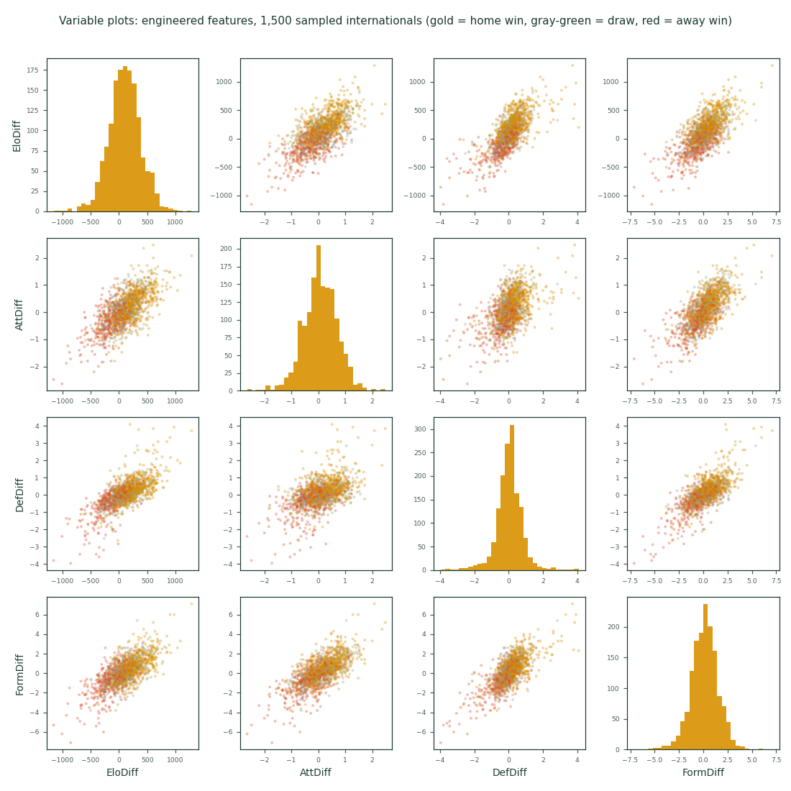
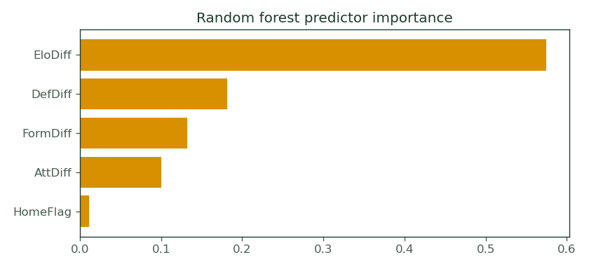
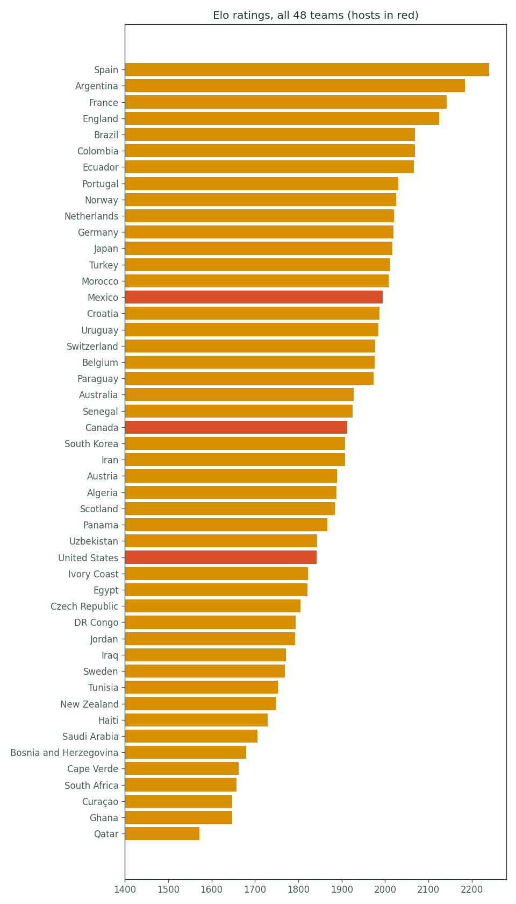

The pipeline at a glance
The whole machine in one picture; click any box to jump to its detail.
1 · Data and strength engine
Training data is the open martj42/international_results dataset: 15,514 internationals since 2010 enter the model (both sides with 10+ prior matches), drawn from 49,400 since 1872 used to compute strength. SPI is gone (FiveThirtyEight ceased publication in 2025), so strength is Elo computed from scratch (Elo 1978; conventions follow World Football Elo Ratings): expected score E = 1/(1+10−ΔR/400); update ΔR = K·G·(result − E); K weighted by competition (60 World Cup, 50 continental, 40 qualifiers, 20 friendlies); G a goal-difference multiplier (1, 1.5, then (11+gd)/8); +100 for a true home side. Attack and Defence are rolling goals for/against over each team's last 25 matches; Form is mean goal difference over the last 10.
2 · Features: each match becomes five numbers
Exactly as in 2014, the models see only pre-match differences: EloDiff, AttDiff, DefDiff, FormDiff, HomeFlag. The scatterplot matrix below is the same EDA call we published in 2014 (car::scatterplotMatrix), on the 2026 features.

3 · Three models
A multinomial logistic regression (interpretable coefficients), a random forest (nonlinear interactions, no functional form), and a double Poisson scoreline model: two GLMs predict each side's goal rate, the outer product of the two Poisson pmfs gives the full score matrix, and summing its triangles yields win/draw/loss. The Poisson model is the only one that can articulate how a draw happens, and it supplies the predicted goal difference (μhome − μaway, rounded).
Original papers, all downloadable: logistic regression, Cox (1958), "The Regression Analysis of Binary Sequences," JRSS B 20(2); random forests, Breiman (2001), "Random Forests," Machine Learning 45(1); Poisson football scorelines, Maher (1982), "Modelling Association Football Scores," Statistica Neerlandica 36(3), refined by Dixon & Coles (1997), JRSS C 46(2).
| Feature | β away | β draw | β home |
|---|---|---|---|
| EloDiff | -0.862 | -0.002 | +0.864 |
| AttDiff | +0.063 | -0.001 | -0.062 |
| DefDiff | -0.046 | -0.008 | +0.054 |
| FormDiff | -0.074 | +0.013 | +0.061 |
| HomeFlag | +0.006 | -0.007 | +0.001 |
Standardized multinomial coefficients. One standard deviation of Elo advantage moves the home-win logit by +0.86.

4 · Honest evaluation, then the ensemble
Unlike 2014, where we fit and predicted within the same tournament, every number below is strictly out of sample: trained through 2023, scored on all 2,535 internationals from January 2024 to June 2026. The ensemble weights components by inverse holdout Brier score (Brier 1950, Monthly Weather Review 78(1)): logistic 0.34, random forest 0.33, Poisson 0.33.
| Model | Accuracy | Brier ↓ | Log loss ↓ |
|---|---|---|---|
| Logistic | 59.8% | 0.5105 | 0.8668 |
| Random Forest | 59.8% | 0.5128 | 0.8726 |
| Poisson | 59.6% | 0.5128 | 0.8721 |
| Ensemble | 59.8% | 0.5107 | 0.8681 |
Reference points: predicting base rates every time scores Brier 0.636; a uniform coin-flip model scores 0.667. Draws are the hard class; roughly a quarter of internationals end level and no public model predicts them well.
Mid-tournament policy, stated in advance
Published predictions are never revised or refit on early results: with holdout accuracy near 60 %, a 3-of-6 start has roughly a 46 % probability under a perfectly healthy model, so reacting to it would be fitting noise. What updates continuously is the data: every result feeds Elo and the form windows, and the knockout-round predictions will apply this same frozen model to strengths that have absorbed all 72 group results. If the model is ever genuinely beaten (pre-registered tripwire: running Brier worse than the 0.628 a base-rate forecaster scores, after 24+ matches), any successor ships as a clearly labeled v2 predicting alongside v1 on the same public scorecard, never replacing it. Headline skill metric: the Brier Skill Score versus the naive base-rate forecaster; the ordered-outcome alternative is the Ranked Probability Score (Constantinou & Fenton 2012, J. Quant. Analysis in Sports 8(1)).
Challenger: Wisdom of Crowd (UKM)
The leading challenger as of matchday 4. Developed by UKM (Ujjal Mukherjee), this model aggregates collective belief rather than building a statistical model from match data. The methodology, documented in full in UKM's companion page:
1. Data collection: pre-match sentiment scraped from Reddit r/soccer, betting exchange forums, Twitter polls, and fan prediction sites for each of the 72 group matches.
2. Sentiment scoring: natural language processing classifies each comment or post as backing Team A win, Draw, or Team B win.
3. Weighting: posts from the last 48 hours receive 2x weight (recency); users with verified betting history receive +30% influence (skin-in-the-game premium).
4. Bayesian smoothing: raw sentiment percentages are blended with historical FIFA win/draw/loss base rates (41/26/33) to prevent extreme swings from small-sample threads. This is a shrinkage estimator: when Reddit data is sparse for a match, the prediction regresses toward the historical prior.
5. Manual adjustment: minor corrections for confirmed injuries, venue altitude (relevant at Estadio Azteca, 2,240m, and Estadio Monterrey, 540m), and travel fatigue. Host nations receive approximately +2%.
6. Output: rounded to whole percentages, sum constrained to 100%. Goal difference derived from the probability vector via Poisson inversion.
The model's structural advantage: it absorbs soft information (squad morale, tactical leaks, fan domain knowledge) that no historical dataset contains. Its structural risk: crowd sentiment is biased toward popular teams and recent results, and Bayesian smoothing with a fixed prior may over-regularize genuine surprises. The leaderboard tests whether the advantage outweighs the risk. Through 10 matches, it does: WoC leads with Brier 0.569, the only model with positive skill against the naive forecaster.
Theoretical foundation: Surowiecki, J. (2004), The Wisdom of Crowds, Doubleday (the aggregation-of-independent-judgments argument). Tetlock, P. E. and Gardner, D. (2015), Superforecasting, Crown (crowd forecasting tournaments). For the Bayesian smoothing specifically: Efron, B. and Morris, C. (1977), "Stein's Paradox in Statistics," Scientific American 236(5): 119–127 (shrinkage estimation, the mathematical basis for blending raw data with a prior).
Challenger: Latent State-Space v1 (UKM)
Dynamic bivariate Poisson model inspired by Koopman and Lit (2015, JRSS A 178(1): 167–186). Team attack and defence strengths are latent states initialized from rolling 25-match averages, then updated via exponential smoothing after each observed World Cup match. Scoring rates are adjusted by Elo quality gaps to correct for the opponent-strength confound in raw rates. The bivariate Poisson with correlation ρ ≈ 0.2 generates proper draw mass, addressing the independent Poisson model's systematic underpricing of draws (Maher 1982, Table 6). Two structural advantages over the champion: (1) strengths update dynamically during the tournament rather than staying frozen, (2) draw probabilities are elevated by the score correlation parameter.
Challenger: Betting market consensus
Implied probabilities from pre-match odds averaged across 20–31 bookmakers (source: the-odds-api.com), with the overround (bookmaker margin) removed via normalization. The betting market is the academic gold standard for forecast benchmarking because it aggregates the beliefs of millions of people with money at stake, the purest form of incentive-compatible information revelation. Every serious forecasting paper uses closing odds as the yardstick to beat. References: Štrumbelj, E. (2014), "On Determining Probability Forecasts from Betting Odds," International Journal of Forecasting 30(4): 934–943; Constantinou, A. C. and Fenton, N. E. (2012), "Solving the Problem of Inadequate Scoring Rules for Assessing Probabilistic Football Forecast Models," Journal of Quantitative Analysis in Sports 8(1).
The forecasting tournament
The leaderboard scores every registered model, crowd signal, and human forecaster on the same Brier scale, on the same matches, with predictions frozen before kickoff. Entry rules: (1) register before your first prediction is scored; no retroactive submission, (2) submit a full probability vector (W/D/L summing to 1) per match, not just a pick, because Brier rewards calibrated confidence, (3) pre-register all remaining predictions at the point of entry. The champion (this site's Elo ensemble) is scored on all 72 group matches; challengers entering mid-tournament are scored from their entry date forward, and the leaderboard displays matches scored per model so the comparison is transparent. Scoring methodology: multiclass Brier (Brier 1950); skill score vs the naive base-rate forecaster; accuracy as a secondary metric. At current sample sizes (see the statistical power note), models within ~0.05 Brier of each other are indistinguishable. The leaderboard is entertainment until N is large enough for the confidence intervals to separate.
5 · Current strength estimates

6 · Lineage and classroom use
The 2014 system scraped Soccerwiki for player-derived ratings, added FiveThirtyEight's SPI, imputed shot differentials with random forests, and ensembled GLM, random forest, and SVM; it called Germany over Argentina in the final. 2014–2018 archive: ubanalytics.wordpress.com.